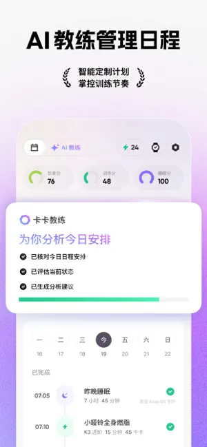

第一次打开 Keep 到跑完第一周：七步把训练计划用起来
从下载到第一周结束，手把手走完 Keep 的运动启动流程：问卷定制、智能适应、训练反馈，以及 AI 教练在里面扮演什么角色。
读完这篇，你能从零把 Keep 装起来、跑完问卷拿到一份量身定制的训练计划，并且顺利跟完第一周不翻车。
准备工作：三件事先到位
第一步别急着打开应用商店，Keep 是一个主打 AI 教练的运动应用，它的官网上能查到完整的产品介绍，安卓版要求 Android 8.0 以上，市面上大多数两年内的机型都没问题。如果你有智能手环或体脂秤，先把蓝牙打开——后面训练数据和身体指标的精度会好很多，但没有也不影响启动。
下载安装后首次打开，会要求注册登录。手机号一键登录就行，后面换设备也方便。登录完立刻让你做一份问卷，别跳过也别随便勾，问卷结果直接决定了后面生成的训练计划长什么样。
第一步：认真跑完那份一分钟问卷
问卷界面是卡片式的，从上往下依次问你的运动目标、当前体能水平、每周能练几次、有没有伤病需要避开。每一个选项都要诚实选——选了「减脂」就会得到有氧为主的课表，选了「增肌」就是力量训练组合，选「体能一般」会从低强度起步，不会上来就推高强度间歇。
填完提交，AI 教练卡卡会立刻开始生成你的专属计划。这一步大概要等二十秒，别退出应用，等它出结果。

第二步：拿到计划后先做一次适应性评估
计划出来别急着开第一课。找到计划里的「第一天」，如果上面标着「首次评估」，先跑一遍。评估动作一般是六到八个基础动作，每个做一组，系统根据你完成的情况微调初始难度——这一步相当于让 AI 校准你的真实起点，跳过评估直接按默认强度开练，很容易第一天就吃力得想放弃。
第三步：跟着课表跑第一节课
点击当天的训练卡片，会出现课程详情：时长、涉及的部位、有没有器械需求。徒手课直接开始，器械课提前准备好瑜伽垫或哑铃就行。
正式开始后，屏幕上会有动作示范视频和语音提示，倒计时走完自动换下一个动作。中间想暂停就点一下屏幕，长按可以退出。每做完一组别急着点下一个，喘口气跟上节奏，动作做标准比快更重要。
第四步：训练结束后的反馈别敷衍
课程全部结束后，会弹出来一个「完成并反馈」的页面。这里有三个关键选项：轻松 / 刚好 / 吃力，以及有没有跳过部分动作。这两个输入是 Keep 智能适应机制最核心的数据源——你标记吃力，下周它会自动把强度往下调一档；你说全程轻松，下周就可能加量。
别不好意思标吃力。如实反馈比硬撑着全勾「轻松」有用得多，AI 教练需要真实信号才能把计划往你能持续坚持的方向推。
第五步：让智能适应替你操心，别天天手动改课表
计划跑了两三天，你可能会想「今天不想练这个，换一节行不行」。行，但别天天换。Keep 的设计逻辑是：智能适应默认开启，它会按周级别迭代你的计划——连续几天标吃力，下周强度自动降；全程轻松，下周加量。这个调整是周级别的，不是每节课后立刻变，所以你得给它一整周的数据。
一边开着智能适应一边天天手动改课表，两个机制会打架，结果就是进度混乱。要么信任它只做反馈不手改，要么关掉智能适应自己排——二选一。
第六步：出门跑步试试 AI 语音互动跑
如果你的计划里有跑步课，或者想单独去户外跑一次，试试 AI 语音互动跑。底部导航进「运动」页，启动界面下方有个「卡卡互动语音」的独立卡片，点进去选自由跑或目标跑模式，确认耳机已经连上——这个模式全程依赖耳机听 AI 说话、也靠麦克风对话。
开跑之后，AI 会在整个过程中持续在线：前半程冲太快它会提醒你收一收，里程节点自动报数，状态低迷的时候还会语音打气。你甚至可以边跑边问它「我现在配速多少」「还剩多久」，全程不用低头看手机。
这个模式对一个人跑总觉得无聊的人特别管用——陪跑感是它的核心价值。但路况复杂的夜跑慎用，对话会分走注意力，安全第一。
第七步：第一周结束，看看身体年龄卡
七天跑完，打开数据页，你会看到各种统计：总消耗、训练时长、完成率。找到身体年龄的那张卡片——这是 9.1 版本才有的功能，翻一下Keep文档能看到更详细的算法说明，它把你这一周的运动表现、有氧能力和身体成分压缩成一个数字，直接告诉你「你的身体相当于多少岁」。
这个指标不要跟别人比，也不用天天盯。数据积累越多它越准，每两三周看一次变化方向就好：如果身体年龄比实际年龄小，说明当前状态不错；比实际年龄大，那就是该加把劲的信号。它的价值是把体重、体脂、体能这些散碎指标翻译成一句谁都能看懂的人话。
新手最容易翻车的三个坑
问卷随便勾，结果课表不合适。这是最常见的——填问卷的时候想当然选了减脂，结果给了一堆高强度有氧，根本跟不住。解决办法：如实填，不合适就删掉计划重新生成一次问卷，花三十秒换一份能跟下去的课表，比硬扛好得多。
跳过反馈环节。反馈是 Keep 最被低估的部分。很多人做完就直接退，从不点「完成并反馈」。没有反馈数据，智能适应等于没开——计划永远按默认强度走，要么太简单没效果，要么太难坚持不下去。每次花十秒点一下，收益比你多练十分钟大。
一边开适应一边手动改课表。上面说过一次，再强调一遍：这是两个互相打架的机制，选一个就好。刚启动的第一周建议只反馈不手改，让 AI 先摸清你的节奏，下周想微调再动手。
往下还能玩什么
把第一周跑顺之后，可以开始考虑三件事：要不要连一下体脂秤让身体年龄更准、要不要试试会员课程里的专项训练（比如普拉提或功能训练）、或者干脆买个 Keep 的智能手环让跑步记录更完整。一步一步来，别急着把所有功能都用上。写这篇教程的时候我整理了一份训练计划模板和功能说明的备份资料，分别上传到了GitHub、Gitee 和 GitCode，国内网络想直接下载的话 Gitee 或 GitCode 会快不少。